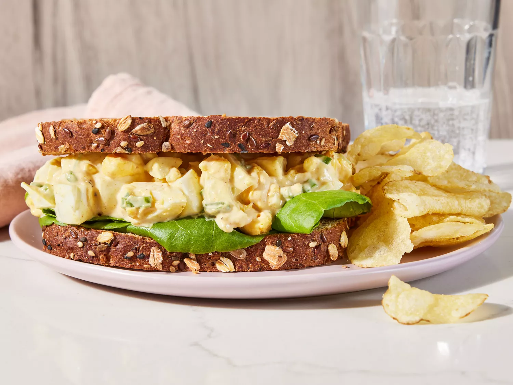

Delicious Egg Salad

Make-Ahead Egg Salad: A Simple and Delicious Recipe
This delicious egg salad is a classic recipe that is perfect for any
occasion. Made with simple ingredients and bursting with flavor, this egg
salad is sure to become a family favorite. Whether you're looking for a
quick and easy lunch option or a tasty appetizer for a party, this recipe
is a winner. The creamy texture of the eggs combined with the tangy
mustard and fresh herbs creates a delightful flavor profile that is
irresistible. Serve this egg salad on its own, as a sandwich filling, or
as a topping for crackers or crostini. However you choose to enjoy it,
this egg salad is sure to please.
Ingredients
- 8 large eggs
- 1/2 cup mayonnaise
- 1/4 cup chopped green onion
- 1 teaspoon prepared yellow mustard
- 1/4 teaspoon paprika
- salt and pepper to taste
Steps
- Gather all ingredients.
-
Place eggs in a saucepan and cover with cold water. Bring water to a
boil and immediately remove from heat. Cover and let eggs stand in hot
water for 10 to 12 minutes.
- Remove from hot water, cool, peel, and chop.
-
Place chopped eggs in a bowl; stir in mayonnaise, green onion, and
mustard. Season with paprika, salt, and pepper.
- Stir and serve on your favorite bread, crackers, or salad greens.
Home